Vital Streets
When walkable isn't worth walking. Safety and comfort are the floor. What keeps people walking is cadence and invitation—short blocks, frequent entrances, and reasons to turn the next corner.
This comparative downtown analysis looks at Bellevue, Seattle, and Portland to test how urban grain and active places—cafés, dining, retail, and culture—relate to the “I want to keep walking” experience.

Project Overview
While working on the Bellevue Downtown Association Strategic Plan, workshop and survey feedback repeatedly flagged superblocks and long, quiet frontages in Downtown Bellevue. This project pressure-tested that perception with a comparable readout for Bellevue, Seattle, and Portland, asking a simple question: is a downtown merely walkable, or does it actively pull you forward?
Urban Form & Activity Distribution
The 2.5D maps below compare three downtowns using street centrality and active POIs. Yellow dots indicate “vital” public-facing activity—cafés, food and beverage, retail, and cultural places. Street lines are colored by harmonic closeness, a network-based proxy for connectivity and reach. Together, these visuals show not only where activity exists, but whether it is frequent enough and well distributed enough to keep a pedestrian moving through the district.


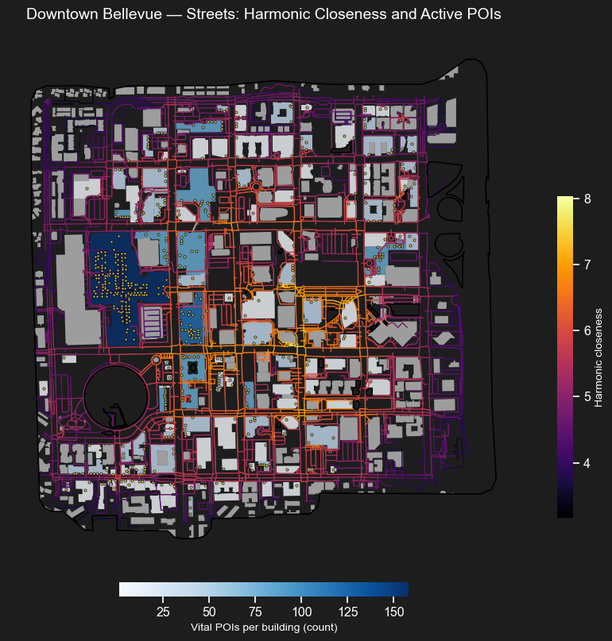
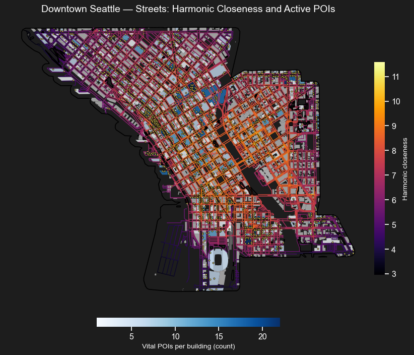
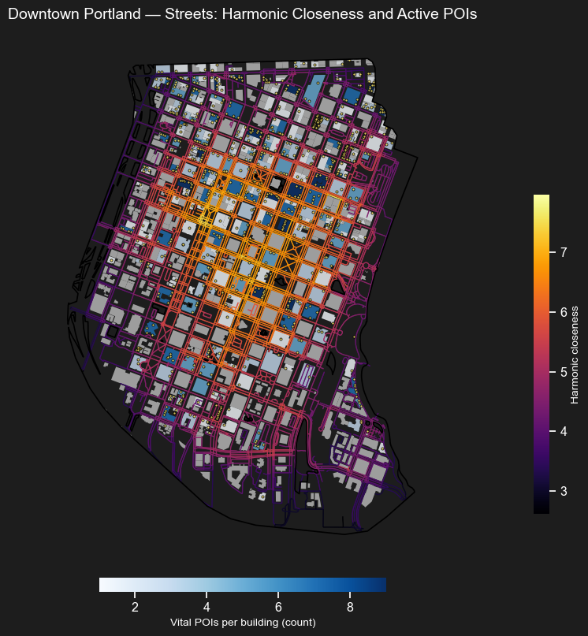
What the Comparison Shows
Downtown Bellevue
- Superblocks and larger buildings create longer frontages and fewer “decision points” for pedestrians.
- Activity is concentrated around Bellevue Square / Bellevue Collection rather than distributed widely.
- Many amenities in tech towers are internal—cafeterias, gyms, lounges—reducing public-facing storefront presence.
- Highest share of buildings without vital POIs among the three downtowns.
Downtown Seattle
- Finer urban grain and the largest count of vital POIs.
- Activity is distributed across many blocks rather than tied to one dominant anchor.
- Higher storefront frequency produces more “doors per minute,” encouraging continued walking.
- Street connectivity aligns more closely with visible public-facing uses.
Downtown Portland
- Broadly similar spatial pattern to Seattle, with smaller buildings and fewer POIs overall.
- Still maintains a relatively even spread of activity across the grid.
- Food trucks and temporary activation help turn plain lots or edges into street life anchors.
- Shows how lower-intensity urban fabric can still feel inviting when activity is well distributed.
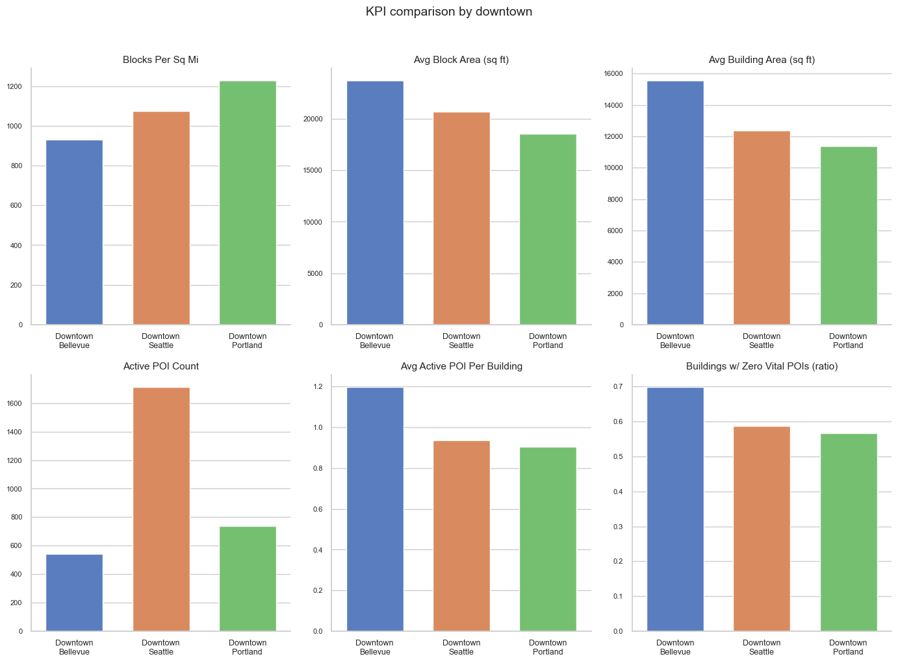
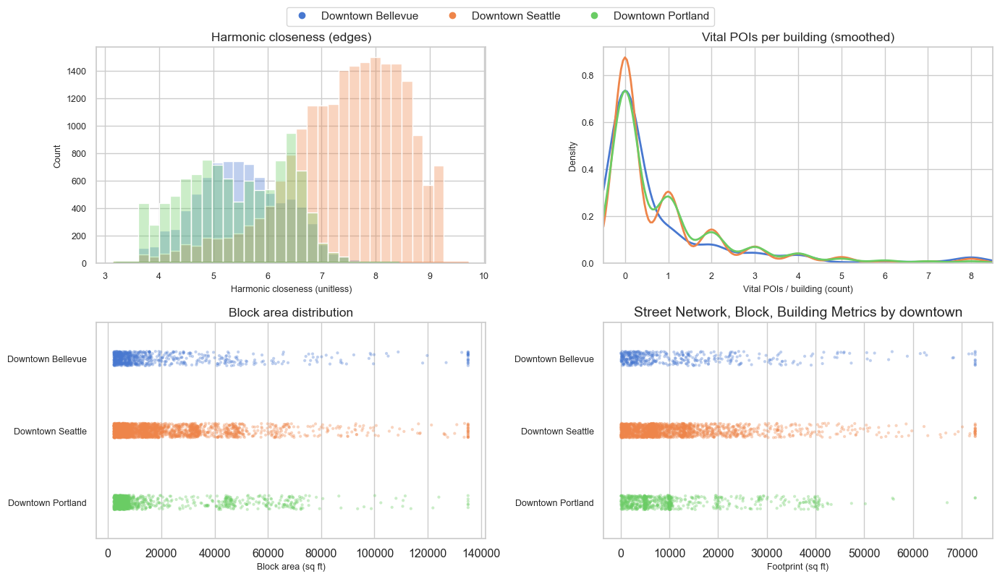
Opportunity Streets & Distribution Readouts
An opportunity street is a corridor where the street network says people should be moving through, but the public-facing activity on the ground has not caught up. In this project, those streets are identified by a connectivity–activity gap: high harmonic closeness paired with weaker-than-expected visible retail, dining, or cultural presence. These are not “bad streets.” They are streets with structural potential—corridors where storefront activation, programming, or frontage improvements could generate a stronger walking experience.
This matters because downtown improvement is not only about preserving existing hot spots. It is also about identifying where the urban fabric is already doing part of the work, and where public-facing uses could be layered in to turn pass-through corridors into places that actually invite people to linger, turn the next corner, and keep walking.
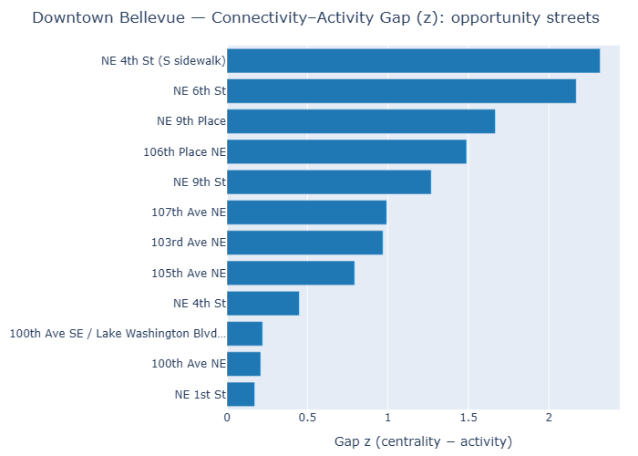
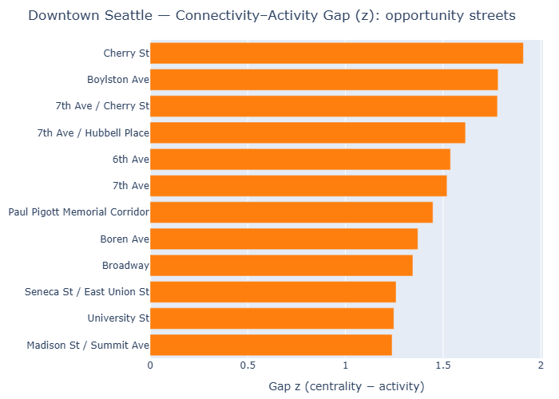
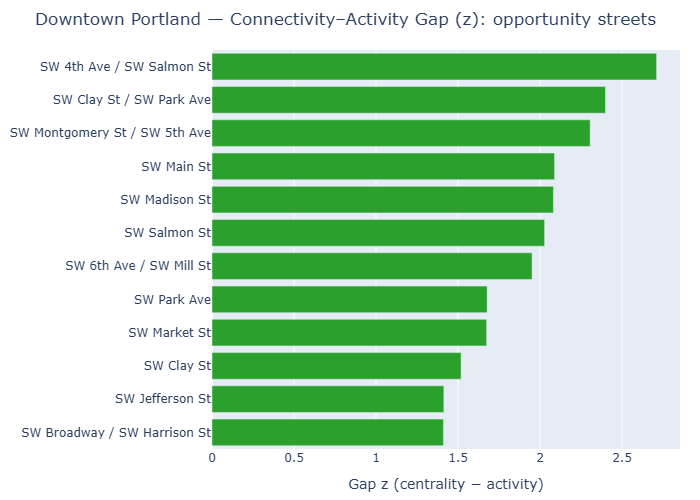
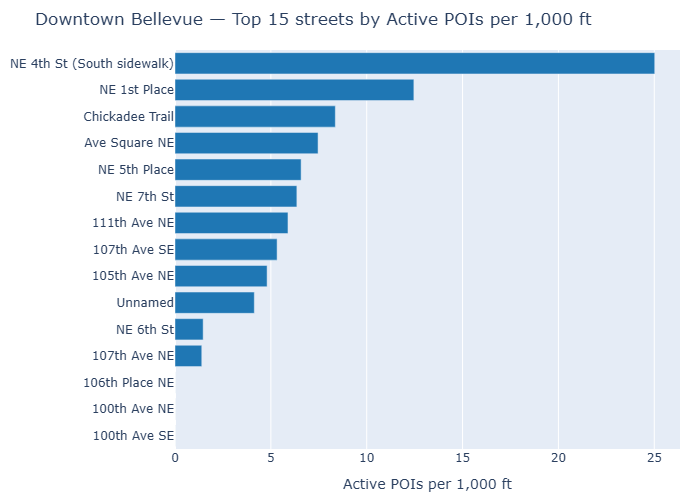
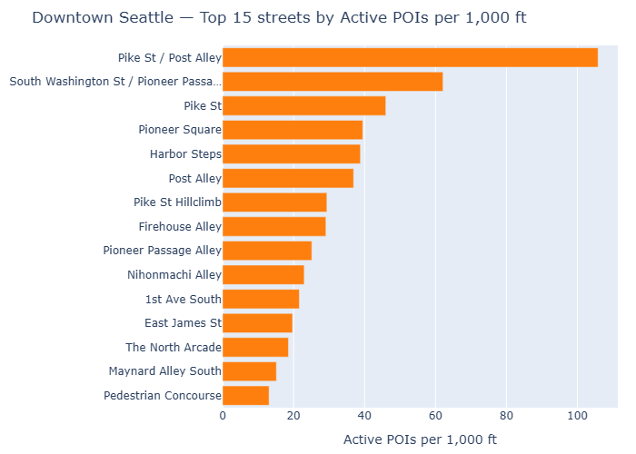
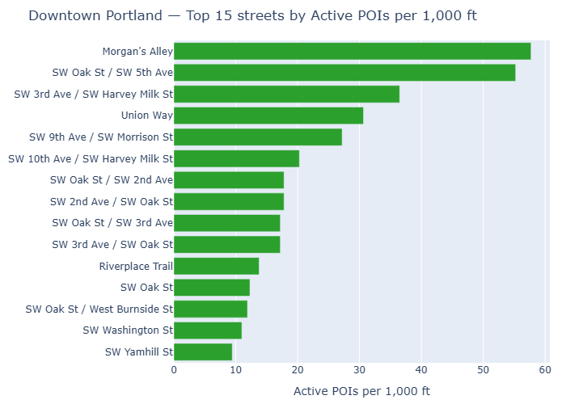
Methodology
Approach
This project compares three downtowns through a combined urban form and activity lens. The analysis pairs street-network centrality with counts of “vital” public-facing POIs and summarizes the results through maps, KPI charts, and ranked street readouts.
Core logic: if a corridor has strong connectivity but weak activity, it may represent an opportunity street—well positioned, but underperforming in terms of public-facing invitation.
Data & Tools
Data sources: OpenStreetMap street networks, building footprints, and POIs; downtown study area boundaries; project-specific filtering of vital categories such as food and beverage, retail, and culture.
Tools: Python, GeoPandas, network centrality workflows, QGIS 2.5D visualization, and charting workflows for comparative KPI outputs.
* POIs come from OSM and may not always represent strict ground-floor storefront conditions. Adding floor or level data would sharpen the storefront-specific interpretation.